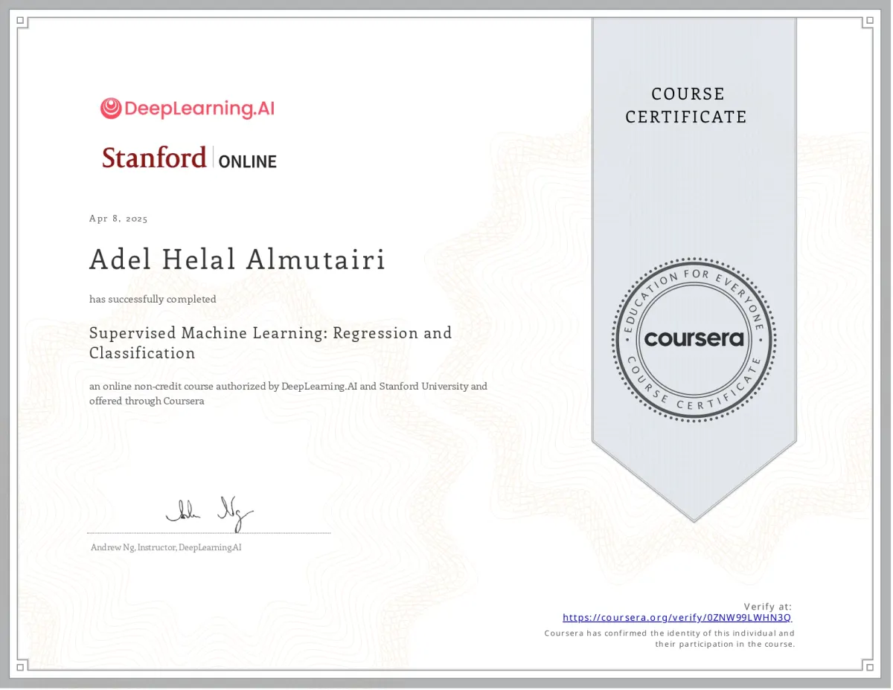

Genomics
Assembly, alignment, annotation, variant calling, and population genetics for whole-exome and whole-genome sequencing projects.
Senior Bioinformatics Specialist · KAIMRC
Genomics, phylogenetics and machine learning for health — from tracing foodborne outbreaks to deep learning on protein sequences.
Bridging biology and computational science.
I apply computational tools and statistical methods to biological questions — from raw sequencing reads to results that research and public-health teams can act on.
I hold an MSc in Bioinformatics from the University of Exeter and a BSc in Microbiology from King Saud University, and have delivered collaborative work with the Saudi FDA, KFSHRC and several Saudi universities.
Assembly, alignment, annotation, variant calling, and population genetics for whole-exome and whole-genome sequencing projects.
SNP analysis, tree construction, and comparative evolutionary studies to trace pathogen origins and relationships.
Community profiling, functional analysis, and taxonomic classification for environmental and clinical samples.
Statistical modeling, machine learning, visualization, and narrative reporting using Python, R, and HPC systems.
$ ls ~/toolkit/languages
$ ls ~/toolkit/environment
$ ls ~/toolkit/methods
Professional journey in bioinformatics — leading genomic analysis and research collaborations.
– Present
King Abdullah International Medical Research Center (KAIMRC)
Designing and maintaining computational pipelines to process and analyze biological data.
–
Saudi Food and Drug Authority (SFDA)
Leading genomic analysis for food safety and public health initiatives. Conducting outbreak investigations, pathogen characterization, and surveillance monitoring using advanced bioinformatics workflows.
KSU · KFSHRC · IAU
Provided bioinformatics support for MSc theses, focusing on bacterial genome analyses and antimicrobial resistance gene detection.
2024
University of Exeter, United Kingdom
Developed a computational workflow to predict and trace evolutionary relationships of transmembrane proteins in NCLDVs, utilizing AlphaFold to reduce experimental costs and accelerate research.
2022
King Saud University, Saudi Arabia
Second Place — Graduation Project Excellence Award
Recent work and research contributions in applied genomics, phylogenetics and machine learning.
A multi-task deep learning model that predicts transmembrane proteins and signal peptides, combining advanced neural architectures for protein structure prediction.
Try it on Hugging FaceIdentified plastic-degrading and biofilm-forming bacteria in soil metagenomes for environmental applications.
Benchmarked SNP-matrix phylogeny versus core genome MSA for Salmonella enterica isolates to improve epidemiological accuracy.
Assembly, annotation, and comprehensive analysis for multiple thesis projects across leading Saudi research institutions.
Applied comparative genomics to trace contamination sources in a food poisoning outbreak linked to Clostridium species.
MSc research detecting transmembrane proteins in NCLDVs and exploring their evolutionary relationships using advanced computational methods.
Academic and professional credentials. Select a certificate to view it in full.

2024
University of Exeter
2022
King Saud University

2024
KAUST · Coursera
Verify
2025
DeepLearning.AI & Stanford
Verify
2024
Rice University · Coursera
Verify
2022
Doroob
Let's connect and collaborate — available for opportunities in bioinformatics and genomic research.